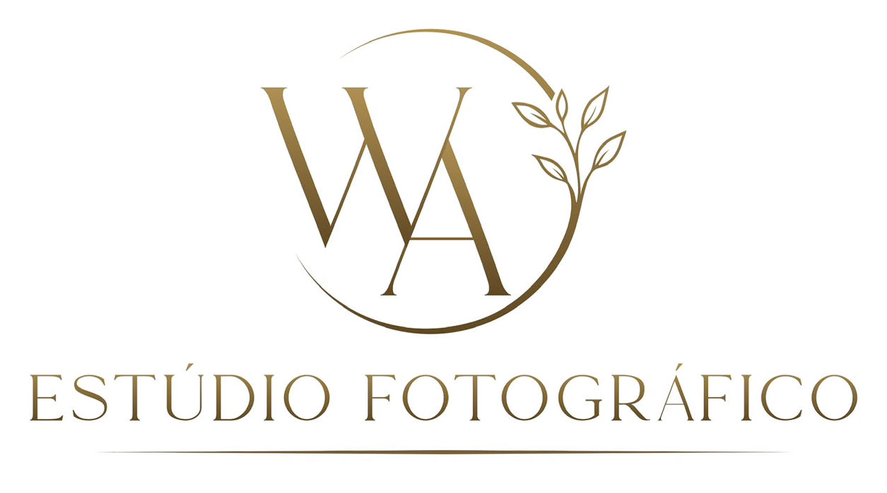
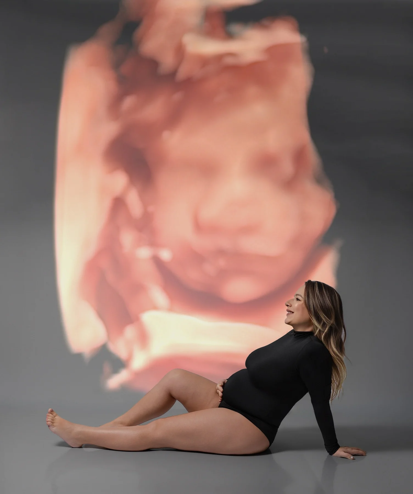
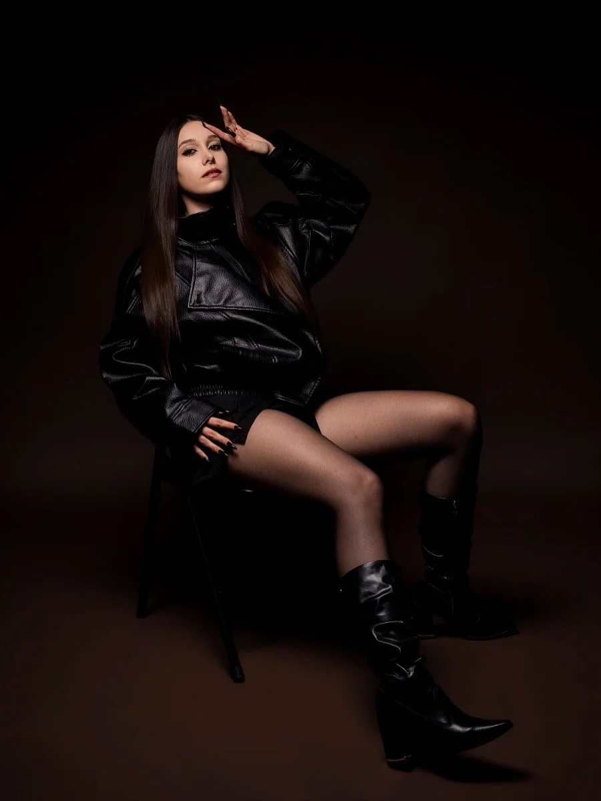

Ensaios
Retratos, gestante, casais, família e histórias que merecem uma pausa.

Instagram ↗
FOTOGRAFIA • MEMÓRIA • PRESENÇA
Uma fotografia não precisa explicar. Precisa fazer você sentir de novo.
Explorar trabalhos ↓O OLHAR WA
Do primeiro encontro ao último clique, a experiência é pensada para que a fotografia pareça natural — mas nunca comum.
Conheça o estúdio ↗PORTFÓLIO
O portfólio é atualizado pelo painel administrativo.
O que a gente fotografa hoje,
amanhã vira saudade.
WA ESTÚDIO FOTOGRÁFICO

SOBRE O WA
O WA Estúdio Fotográfico nasceu para criar imagens que carregam verdade. Nosso trabalho mistura direção, sensibilidade e atenção aos pequenos detalhes para entregar fotografias com identidade.
Você não precisa saber posar. A direção acontece durante a sessão para que o resultado tenha a sua cara.
EXPERIÊNCIAS
Retratos, gestante, casais, família e histórias que merecem uma pausa.
Da preparação à festa: presença, emoção e os detalhes que passam rápido.
Acompanhamentos, aniversários, família e fases que mudam depressa.
Imagem pessoal, profissional e editorial com direção e estética.
VAMOS CRIAR ALGO?
Conte um pouco sobre o que você está planejando e vamos conversar.